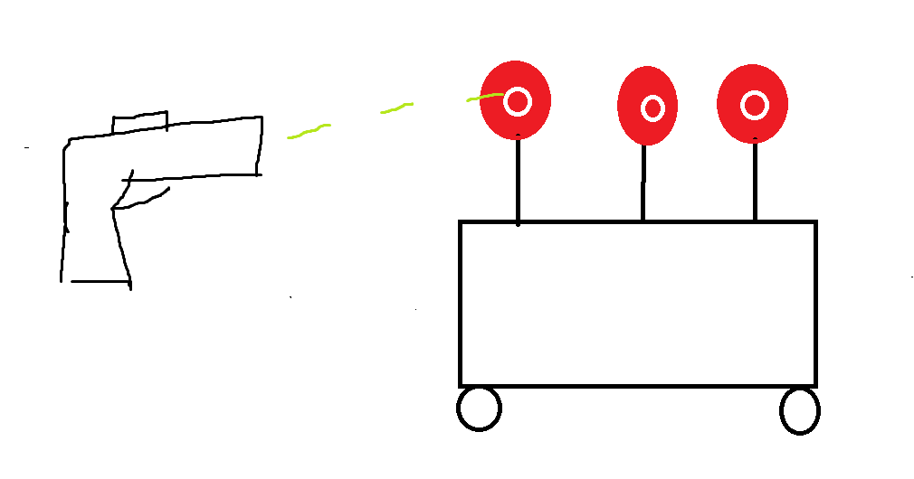

Rootin' Tootin' Robot
A fun gun game
A Project By Derek Lee, Keyi Zhou.
Demonstration Video
Introduction
We present a shooting robot game that we designed and built using two Raspberry Pis, a PiTFT, motors, servos, and Bluetooth communication. Our objective was to create an engaging and fun game and to demonstrate what we have learned throughout the semester. The game is playable by one player. Here we will describe the design, testing, and results of our project.
Project Objective:
- Design and build a shooting robot game using a RaspberryPi
- Wire and assemble a robot containing motors, a Raspberry Pi, a PiTFT, wheels, servos and power supplies.
- 3D design and print a gun model that can contain a Raspberry Pi, a button, a power bank, and a camera.
- Control the servo and motor using PWM signal.
- Implement computer vision algorithms to detect colors in the camera's field of view.
- Program the gun device to communicate wirelessly with the robot car using Bluetooth.
Design
We used a Raspberry Pi as the main controller for both the robot car and the gun station. The robot car uses two motors, a motor controller and controlled by hardware PWM, and had two balloon flags that moved through servos controlled by software PWM. The gun station had a camera and used color detection to detect whether the gun is aiming at one of the balloons and a button for triggering the detection process and starting / stopping the game. The two components communicated with each other via Bluetooth.
When the button from the gun is pressed for the first time, the balloon flags will raise (if they are not already) indicating the start of the game. Then the robot will move randomly. The player then will try to aim the camera at the balloon targets and use the button to "shoot." When the button is pressed, the camera will take a picture, then analyze the center of the image to detect the most prominent color. It then sends this color to the robot. If the color is one of the flags', the robot will put down the flag by rotating the servo. When both targets are down, the player has won the game, and the robot will stop. Pressing the button after the game has been won will start the game again. After the first target is down, the player has 5 chances to shoot down the other one. Failing to do so will result in both of the flags being raised again. There is also an emergency stop "button," which is green. When the button on the gun is pressed and the camera detects green, the robot will stop. Pressing the button again will restart the game.
Drawings
The drawing that conceived the idea of the Rootin' Tootin' Robot
Testing
We tested our shooting robot game by playing it many times to ensure that it worked as intended and was free of bugs and glitches. The only glitch and or bug is that one could cheat at our game by "shooting" at something blue or yellow that is not the balloons. We performed multiple rounds of testing, including hardware and software tests for each seperate unit, and, as stated earlier, playing the game many times. the overall playing experience. Our game works as expected.
Result
Our shooting robot game was successful in achieving its objective of providing an engaging and fun game. We received positive feedback from test users and were able to identify areas for improvement to make the game even better if we had more time to work on the project. If we were to work on the project longer, we would add more balloons to create more targets for the user to need to shoot down. We would also create multiple difficulty levels that utilized the speed of the robot and varying levels of unpredictability to create a more challenging experience for those that wanted the game to be harder.
Work Distribution
Project group picture

Rick
netid@cornell.edu
Designed the overall software architecture (Just being himself).
Morty
netid@cornell.edu
Tested the overall system.
Parts List
- Raspberry Pi 4 $35.00
- Raspberry Pi 3 $35.00
- Raspberry Pi Camera Module 3 $25.00
- Servos for the Balloon Targets - Found in personal hardware stash
- Motors, Robot Kit - Provided in lab
- LEDs, Resistors and Wires - Provided in lab
- All parts were either already in the lab or acquired from our personal hardware, so no ordering of parts was required.
Total: $95.00
Code Appendix
# game_server.py
import pygame
import os
import time
import RPi.GPIO as GPIO
import sys
start_time = time.time()
GPIO.setmode(GPIO.BCM)
quit_button_pin = 27
GPIO.setup(quit_button_pin, GPIO.IN, pull_up_down=GPIO.PUD_UP)
def quit_callback(channel):
global code_run
print("quit")
code_run = False
code_run = True
GPIO.add_event_detect(quit_button_pin, GPIO.FALLING, callback=quit_callback, bouncetime=300)
left = 0
right = 1
left_pwm_pin = 13 #26
left_in_pin1 = 5
left_in_pin2 = 6
right_pwm_pin = 12
right_in_pin1 = 26 #13
right_in_pin2 = 19
pwm_pins = [left_pwm_pin, right_pwm_pin]
in_pins = [(left_in_pin1, left_in_pin2), (right_in_pin1, right_in_pin2)]
for pin in pwm_pins:
GPIO.setup(pin, GPIO.OUT)
for pin1, pin2 in in_pins:
GPIO.setup(pin1, GPIO.OUT)
GPIO.setup(pin2, GPIO.OUT)
half_freq = 50
full_freq = 50
half_dc = 60
full_dc = 100
motor_pwms = []
# -1 ccw, 1 cw, 0 straight
direction = 0
for pwm_pin in pwm_pins:
motor_pwm = GPIO.PWM(pwm_pin, full_freq)
motor_pwms.append(motor_pwm)
motor_pwm.start(0)
def stop_motor(in_pin1, in_pin2):
GPIO.output(in_pin1, 0)
GPIO.output(in_pin2, 0)
def turn_cw(in_pin1, in_pin2):
global direction
GPIO.output(in_pin1, 1)
GPIO.output(in_pin2, 0)
direction = 1
def turn_ccw(in_pin1, in_pin2):
global direction
GPIO.output(in_pin1, 0)
GPIO.output(in_pin2, 1)
direction = -1
def fix_direction(in_pin1, in_pin2):
if direction > 0:
turn_cw(in_pin1, in_pin2)
elif direction < 0:
turn_ccw(in_pin1, in_pin2)
def half_speed(in_pin1, in_pin2, pwm):
fix_direction(in_pin1, in_pin2)
pwm.ChangeFrequency(half_freq)
pwm.ChangeDutyCycle(half_dc)
def full_speed(in_pin1, in_pin2, pwm):
fix_direction(in_pin1, in_pin2)
pwm.ChangeFrequency(full_freq)
pwm.ChangeDutyCycle(full_dc)
left_button_pin = 23
right_button_pin = 22
button_pins = [left_button_pin, right_button_pin]
for pin in button_pins:
GPIO.setup(pin, GPIO.IN, pull_up_down=GPIO.PUD_UP)
left_state = 0
right_state = 0
states = [left_state, right_state]
histories = [[('Stop', 0) for x in range(3)], [('Stop', 0) for x in range(3)]]
def left_history():
history = ''
for args in histories[left]:
history = history + '{0:<12}{1:>4}'.format(*args) + '\n'
return history
def right_history():
history = ''
for args in histories[right]:
history = history + '{0:<12}{1:>4}'.format(*args) + '\n'
return history
def update_history(side, command):
histories[side].insert(0, (command, round(time.time() - start_time)))
histories[side].pop()
def stop_motor_servo(servo):
update_history(servo, 'Stop')
stop_motor(*in_pins[servo])
stop_state = 0
ccw_state = 1
cw_state = 2
def full_speed_servo(servo):
full_speed(*in_pins[servo], motor_pwms[servo])
def resume_motor(servo):
global states
if states[servo] == stop_state:
update_history(servo, 'Stop')
stop_motor(*in_pins[servo])
elif states[servo] == ccw_state:
update_history(servo, 'Counter-Clk')
turn_ccw(*in_pins[servo])
full_speed(*in_pins[servo], motor_pwms[servo])
elif states[servo] == cw_state:
update_history(servo, 'Clkwise')
turn_cw(*in_pins[servo])
full_speed(*in_pins[servo], motor_pwms[servo])
def loop_motor(servo):
global states
if not stopped:
states[servo] = (states[servo] + 1) % 3
resume_motor(servo)
def left_callback(channel):
loop_motor(left)
def right_callback(channel):
loop_motor(right)
# Turns on button control
# GPIO.add_event_detect(left_button_pin, GPIO.FALLING, callback=left_callback, bouncetime=300)
# GPIO.add_event_detect(right_button_pin, GPIO.FALLING, callback=right_callback, bouncetime=300)
# os.putenv('SDL_VIDEODRIVER', 'fbcon')
# os.putenv('SDL_FBDEV', '/dev/fb0')
# os.putenv('SDL_MOUSEDRV', 'TSLIB')
# os.putenv('SDL_MOUSEDEV', '/dev/input/touchscreen')
# os.environ["DISPLAY"] = ":0"
pygame.init()
size = width, height = 320, 240
WHITE = 255, 255, 255
BLACK = 0, 0, 0
RED = 255, 0, 0
GREEN = 0, 255, 0
screen = pygame.display.set_mode(size)
pygame.mouse.set_visible(False)
stopped = False
def stop_button_action(pos):
global stopped
stopped = not stopped
if stopped:
button_text['stop'] = 'Resume'
for i in range(len(pwm_pins)):
stop_motor_servo(i)
else:
button_text['stop'] = 'Stop'
for i in range(len(pwm_pins)):
resume_motor(i)
def quit_button_action(pos):
quit_callback(quit_button_pin)
def no_button_action(pos):
pass
robot_running = False
def start_button_action(pos):
global robot_running
robot_running = True
button_actions = {'stop': stop_button_action, 'quit': quit_button_action, 'left': no_button_action, 'right': no_button_action, 'start': start_button_action}
my_font = pygame.font.Font(None, 20)
button_defs = {'stop': (width/2, 3 * height/4), 'quit': (300, 200), 'left': (50, 50), 'right': (250, 50), 'start': (width/2, height/4)}
button_text = {'stop': 'Stop', 'quit': 'QUIT', 'left': 'Left History', 'right': 'Right History', 'start': 'Start'}
fps = 24
my_clock = pygame.time.Clock()
cur_level = 1
max_time = 300
seconds_per_feet = 1
loops_per_feet = fps * seconds_per_feet
def move_forward(feet, loop_count, force):
if loop_count == 0 or force:
states[left] = ccw_state
states[right] = cw_state
resume_motor(left)
resume_motor(right)
elif loop_count >= loops_per_feet * feet:
stop_motor_servo(left)
stop_motor_servo(right)
return True
return False
def move_backward(feet, loop_count, force):
if loop_count == 0 or force:
states[left] = cw_state
states[right] = ccw_state
resume_motor(left)
resume_motor(right)
elif loop_count >= loops_per_feet * feet:
stop_motor_servo(left)
stop_motor_servo(right)
return True
return False
seconds_per_deg_left = 1 / 30
seconds_per_deg_right = 1 / 30
loops_per_deg_left = fps * seconds_per_deg_left
loops_per_deg_right = fps * seconds_per_deg_right
def pivot_left(deg, loop_count, force):
if loop_count == 0 or force:
states[left] = cw_state
states[right] = cw_state
resume_motor(left)
resume_motor(right)
elif loop_count >= loops_per_deg_left * deg:
stop_motor_servo(left)
stop_motor_servo(right)
return True
return False
def pivot_right(deg, loop_count, force):
if loop_count == 0 or force:
states[left] = ccw_state
states[right] = ccw_state
resume_motor(left)
resume_motor(right)
elif loop_count >= loops_per_deg_right * deg:
stop_motor_servo(left)
stop_motor_servo(right)
return True
return False
def forward_two(loop_count, force):
return move_forward(2, loop_count, force)
def backward_two(loop_count, force):
return move_backward(2, loop_count, force)
def pivot_left_thirty(loop_count, force):
return pivot_left(30, loop_count, force)
def pivot_right_thirty(loop_count, force):
return pivot_right(30, loop_count, force)
stop_delay = 0.25
loops_per_stop = stop_delay * fps
def stop_sleep(loop_count, force):
return loop_count >= loops_per_stop
robot_behavior_loop = [forward_two, stop_sleep, backward_two, stop_sleep, pivot_left_thirty, stop_sleep, pivot_right_thirty, stop_sleep]
behavior_index = 0
loop_count = 0
last_stopped = False
#servo_pin1 = 18
pins = [21, 16]
servo_list = []
#GPIO.setup(servo_pin1, GPIO.OUT)
freq = 50
def angle_to_duty_cycle(angle):
duty_cycle = float(angle) / 18.0 + 2.5
return duty_cycle
for pin in pins:
GPIO.setup(pin, GPIO.OUT)
pwm = GPIO.PWM(pin, freq)
pwm.start(angle_to_duty_cycle(45))
servo_list.append(pwm)
#pwm = GPIO.PWM(servo_pin1, 50)
#pwm.start(0)
def move_servo(pwm_num, angle):
pwm = servo_list[pwm_num]
pwm.ChangeDutyCycle(angle_to_duty_cycle(angle))
print("moved servo " + str(pwm_num) + " " + str(angle) + " degree")
time.sleep(1)
from bluedot.btcomm import BluetoothServer
servo_down = [False, False]
missed_in_a_row = 0
def data_received(data):
#print("recv - {}".format(data))
#server.send(data)
global robot_running
global servo_down
global missed_in_a_row
if not robot_running:
robot_running = True
move_servo(0, 135)
move_servo(1, 45)
servo_down[0] = False
servo_down[1] = False
missed_in_a_row = 0
return
if data == "blue" and not servo_down[0]:
move_servo(0, 45)
servo_down[0] = True
missed_in_a_row = 0
elif data == "yellow" and not servo_down[1]:
move_servo(1, 135)
servo_down[1] = True
missed_in_a_row = 0
elif data == "green":
robot_running = False
else:
missed_in_a_row += 1
if missed_in_a_row >= 5:
move_servo(0, 135)
move_servo(1, 45)
servo_down[0] = False
servo_down[1] = False
missed_in_a_row = 0
if servo_down[0] and servo_down[1]:
robot_running = False
def client_connected():
print("client connected")
def client_disconnected():
print("client disconnected")
print("init")
server = BluetoothServer(
data_received,
auto_start = False,
when_client_connects = client_connected,
when_client_disconnects = client_disconnected)
print("starting")
server.start()
print(server.server_address)
print("waiting for connection")
move_servo(0, 135)
move_servo(0, 90)
move_servo(0, 45)
move_servo(0, 135)
move_servo(1, 45)
move_servo(1, 90)
move_servo(1, 135)
move_servo(1, 45)
#pwm.ChangeDutyCycle(angle_to_duty_cycle(0))
#time.sleep(1)
#pwm.ChangeDutyCycle(angle_to_duty_cycle(90))
#time.sleep(1)
#pwm.ChangeDutyCycle(angle_to_duty_cycle(180))
#time.sleep(1)
#wm.ChangeDutyCycle(angle_to_duty_cycle(0))
#time.sleep(1)
#pwm.stop()
try:
while code_run:
history_left = left_history()
history_right = right_history()
button_surfaces = {name: my_font.render(button_text[name], True, WHITE) for name, pos in button_defs.items()}
button_rects = {name: surface.get_rect(center=button_defs[name]) for name, surface in button_surfaces.items()}
left_list = history_left.splitlines()
right_list = history_right.splitlines()
ev = pygame.event.get()
for event in ev:
if event.type == pygame.MOUSEBUTTONUP:
pos = pygame.mouse.get_pos()
clicked_buttons = {name: b for name, b in button_rects.items() if b.collidepoint(pos)}
for name, b in clicked_buttons.items():
button_actions[name](pos)
screen.fill(BLACK)
if not stopped and robot_running:
if robot_behavior_loop[behavior_index](loop_count, last_stopped):
behavior_index = (behavior_index + 1) % len(robot_behavior_loop)
loop_count = 0
else:
loop_count += 1
elif not robot_running:
stop_motor_servo(left)
stop_motor_servo(right)
stop_center = button_rects['stop'].center
stop_color = GREEN if stopped else RED
stop_radius = round(max(button_rects['stop'].width/2, button_rects['stop'].height/2))
pygame.draw.circle(screen, stop_color, stop_center, stop_radius)
left_x, left_y = button_rects['left'].left, button_rects['left'].bottom
right_x, right_y = button_rects['right'].left, button_rects['right'].bottom
for i, line in enumerate(left_list):
screen.blit(my_font.render(line, True, WHITE), (left_x, (i + 1) * 25 + left_y))
for i, line in enumerate(right_list):
screen.blit(my_font.render(line, True, WHITE), (right_x, (i + 1) * 25 + right_y))
for name in button_surfaces.keys():
screen.blit(button_surfaces[name], button_rects[name])
my_clock.tick(fps)
pygame.display.flip()
if time.time() - start_time > max_time:
code_run = False
last_stopped = stopped
except KeyboardInterrupt as e:
print("cancelled by user")
finally:
print("stopping")
server.stop()
print("stopped")
for pwm in motor_pwms:
pwm.stop()
pygame.quit()
GPIO.cleanup()
The code running on the robot. This could be modularized and use less of the PiTFT and still function, but this version shows what the robot is doing on the PiTFT screen.
# gun_camera.py
from picamera import PiCamera
from time import sleep
from io import BytesIO
import cv2
from PIL import Image
import numpy as np
camera = PiCamera()
camera.exposure_mode = 'antishake'
camera.resolution = (height, width) = (1024, 768)
capture_time = 0.1
bullet_radius = 50
r = bullet_radius
def take_photo():
image = np.empty((width, height, 3), dtype=np.uint8)
camera.start_preview()
sleep(capture_time)
camera.capture(image, format="rgb")
Image.fromarray(image.astype('uint8')).convert('RGB').save('big.jpg')
x, y, _ = image.shape
temp = image[x//2-r:x//2+r, y//2-r:y//2+r]
Image.fromarray(temp.astype('uint8')).convert('RGB').save('small.jpg')
camera.stop_preview()
return cv2.cvtColor(image, cv2.COLOR_RGB2HSV)
# credit https://stackoverflow.com/a/72138638 for these color ranges and masking
hsv_ranges = [
['white', [0, 0, 168], [180, 111, 255]],
['red', [0, 160, 70], [10, 250, 250]],
['pink', [0, 50, 70], [10, 160, 250]],
['yellow', [15, 50, 70], [30, 250, 250]],
['green', [40, 50, 70], [70, 250, 250]],
['cyan', [80, 50, 70], [90, 250, 250]],
['blue', [100, 50, 70], [130, 250, 250]],
['purple', [140, 50, 70], [160, 250, 250]],
['red', [170, 160, 70], [180, 250, 250]],
['pink', [170, 50, 70], [180, 160, 250]],
['black', [0, 0, 0], [180, 255, 70]]
]
def color_in_center(image):
x, y, _ = image.shape
# cv2.imwrite("full.jpg", image)
image = image[x//2-r:x//2+r, y//2-r:y//2+r]
# cv2.imwrite("small.jpg", image)
color_found = 'none'
max_count = 0
for name, low, high in hsv_ranges:
mask = cv2.inRange(image, np.array(low), np.array(high))
count = np.sum(mask)
#print(name)
#print(count)
if count > max_count:
color_found = name
max_count = count
return color_found
# image = take_photo()
# print(color_in_center(image))
The code to take a photo using the RPi camera and to detect the color in the center of the image.
# button_client.py
import os
import RPi.GPIO as GPIO
import time
from gun_camera import take_photo, color_in_center
from bluedot.btcomm import BluetoothClient, BluetoothAdapter
from datetime import datetime
from time import sleep
from signal import pause
a = BluetoothAdapter()
print(a.paired_devices)
def data_received(data):
print("recv - {}".format(data))
print("Connecting")
connected = False
while not connected:
try:
c = BluetoothClient(a.paired_devices[0][1], data_received)
connected = True
except:
sleep(10)
print("Sending")
code_run = True
button_pin = 17
GPIO.setmode(GPIO.BCM)
GPIO.setup(button_pin, GPIO.IN, pull_up_down=GPIO.PUD_DOWN)
prev_state = False
def button_callback(channel):
print("button pressed")
image = take_photo()
color = color_in_center(image)
print(color)
c.send(color)
GPIO.add_event_detect(button_pin, GPIO.RISING, callback=button_callback, bouncetime=1000)
try:
while code_run:
sleep(1)
finally:
c.disconnect()
GPIO.cleanup()